Animal Crossing Sentiment Analysis
Jim Gruman
May 5, 2020
Last updated: 2021-09-24
Checks: 7 0
Knit directory: myTidyTuesday/
This reproducible R Markdown analysis was created with workflowr (version 1.6.2). The Checks tab describes the reproducibility checks that were applied when the results were created. The Past versions tab lists the development history.
Great! Since the R Markdown file has been committed to the Git repository, you know the exact version of the code that produced these results.
Great job! The global environment was empty. Objects defined in the global environment can affect the analysis in your R Markdown file in unknown ways. For reproduciblity it’s best to always run the code in an empty environment.
The command set.seed(20210907) was run prior to running the code in the R Markdown file. Setting a seed ensures that any results that rely on randomness, e.g. subsampling or permutations, are reproducible.
Great job! Recording the operating system, R version, and package versions is critical for reproducibility.
Nice! There were no cached chunks for this analysis, so you can be confident that you successfully produced the results during this run.
Great job! Using relative paths to the files within your workflowr project makes it easier to run your code on other machines.
Great! You are using Git for version control. Tracking code development and connecting the code version to the results is critical for reproducibility.
The results in this page were generated with repository version c7e3daf. See the Past versions tab to see a history of the changes made to the R Markdown and HTML files.
Note that you need to be careful to ensure that all relevant files for the analysis have been committed to Git prior to generating the results (you can use wflow_publish or wflow_git_commit). workflowr only checks the R Markdown file, but you know if there are other scripts or data files that it depends on. Below is the status of the Git repository when the results were generated:
Ignored files:
Ignored: .Rhistory
Ignored: .Rproj.user/
Ignored: catboost_info/
Ignored: data/2021-09-08/
Ignored: data/CNHI_Excel_Chart.xlsx
Ignored: data/CommunityTreemap.jpeg
Ignored: data/Community_Roles.jpeg
Ignored: data/YammerDigitalDataScienceMembership.xlsx
Ignored: data/acs_poverty.rds
Ignored: data/fmhpi.rds
Ignored: data/grainstocks.rds
Ignored: data/hike_data.rds
Ignored: data/us_states.rds
Ignored: data/us_states_hexgrid.geojson
Ignored: data/weatherstats_toronto_daily.csv
Untracked files:
Untracked: code/YammerReach.R
Untracked: code/work list batch targets.R
Note that any generated files, e.g. HTML, png, CSS, etc., are not included in this status report because it is ok for generated content to have uncommitted changes.
These are the previous versions of the repository in which changes were made to the R Markdown (analysis/AnimalCrossing.Rmd) and HTML (docs/AnimalCrossing.html) files. If you’ve configured a remote Git repository (see ?wflow_git_remote), click on the hyperlinks in the table below to view the files as they were in that past version.
| File | Version | Author | Date | Message |
|---|---|---|---|---|
| Rmd | c7e3daf | opus1993 | 2021-09-24 | adopt direct labeling and viridis H palette |
suppressPackageStartupMessages({
library(tidyverse)
library(tidytext)
library(lubridate)
library(tidyr)
library(stm)
library(tidymodels)
library(textrecipes)
library(vip)
})
source(here::here("code","_common.R"),
verbose = FALSE,
local = knitr::knit_global())
ggplot2::theme_set(theme_jim(base_size = 12))Our goal this week is to explore and predict ratings for Animal Crossing user reviews in this week’s #TidyTuesday dataset from the text in the review. This is what is typically called a sentiment analysis modeling, and it’s a common real-world problem.
Explore the data
user_reviews <- readr::read_tsv("https://raw.githubusercontent.com/rfordatascience/tidytuesday/master/data/2020/2020-05-05/user_reviews.tsv")
user_reviews %>%
count(grade) %>%
ggplot(aes(factor(grade), n)) +
geom_col(aes(fill = factor(grade)),
show.legend = FALSE
) +
labs(
title = "Most Animal Crossing Reviews are at the Extremes",
subtitle = paste0(
"User Review Scores from ",
format(min(user_reviews$date), "%B %d, %Y"),
" to ",
format(max(user_reviews$date), "%B %d, %Y")
),
caption = "Jim Gruman | #TidyTuesday",
x = "Grade",
y = "Number of Reviews"
)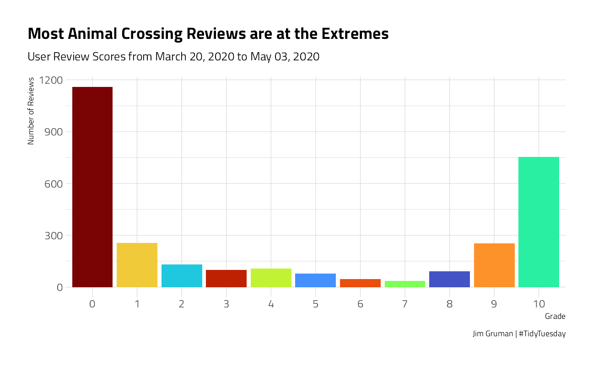
This phenomenon is common in surveys, where many people give the extreme scores of zero and 10. This does not look like a nice distribution for predicting a not-really-continuous quantity like grade, so we’ll convert these user scores to a label, good vs. bad user reviews, and build a classification model. A common theme for the negative reviews is frustration with the one-island-per-console setup, and more specifically the relative roles of player 1 vs. others on the same console.
There is definitely evidence of scraping problems when looking at the review text. Let’s remove at least the final “Expand” from the reviews, and create a new categorical rating variable.
reviews_parsed <- user_reviews %>%
mutate(text = str_remove(text, "Expand$")) %>%
mutate(rating = factor(case_when(
grade > 7 ~ "good",
TRUE ~ "bad"
)))What is the distribution of the new, dependent, category variable rating?
There is a slight skew but we will soldier on and ignore it.
reviews_parsed %>%
ggplot(aes(rating, fill = rating)) +
geom_bar(show.legend = FALSE) +
labs(title = "With a cutoff at 8-10 as Good, how balanced is the dataset?")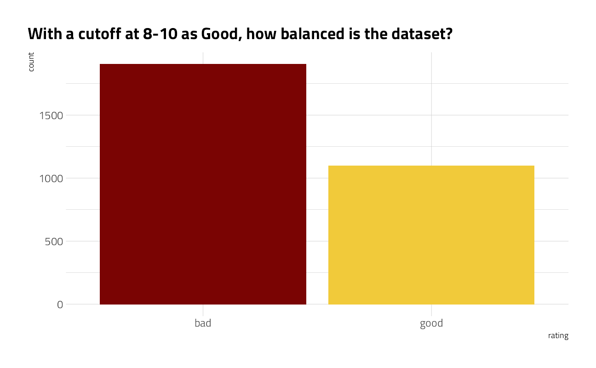
What is the distribution of words per review?
The graph suggests that something is driving a bimodal distribution, with a gap at about 100 words. It should be investigated further.
reviews_parsed %>%
unnest_tokens(word, text) %>%
count(user_name, name = "total_words") %>%
ggplot(aes(total_words)) +
geom_histogram(fill = "#2AA198", bins = 30) +
scale_x_log10() +
labs(
title = "Count of Words in Animal Crossing Reviews",
subtitle = paste0(
"Reviews from ",
format(min(user_reviews$date), "%B %d, %Y"),
" to ",
format(max(user_reviews$date), "%B %d, %Y")
),
caption = "Jim Gruman | #TidyTuesday",
x = "Number of Words in Review",
y = "Number of Reviews"
) +
geom_vline(xintercept = 100, color = "firebrick") +
annotate(
"text",
x = 105,
y = 325,
hjust = 0,
color = "firebrick",
label = "Sharp cliff\nat 100 words"
)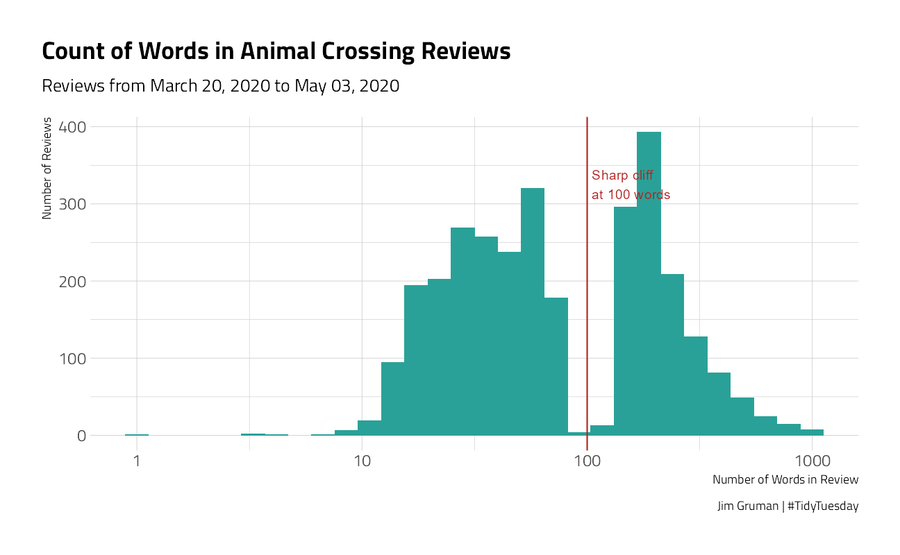
After a cursory inspection of the text of the reviews, there are some where the author pasted the same phrase into the field verbatim several times. We will filter out the repeats above 3x in the modeling dataset.
Review Grades over time
Let’s take a look at how the reviews evolve over time:
by_week <- reviews_parsed %>%
group_by(week = floor_date(date, "week", week_start = 1)) %>%
summarize(
nb_reviews = n(),
avg_grade = mean(grade),
pct_zero = mean(grade == 0),
pct_ten = mean(grade == 10)
)
by_week %>%
ggplot(aes(week, avg_grade)) +
geom_line(color = "#2AA198") +
geom_point(aes(size = nb_reviews), color = "#2AA198") +
expand_limits(y = 0) +
scale_x_date(date_labels = "%b %d", date_breaks = "1 week") +
labs(
x = "Week", y = "Average Grade",
size = "# of Reviews",
title = "Animal Crossing User Review Grades",
subtitle = paste0("By Week"),
caption = "Jim Gruman | #TidyTuesday"
)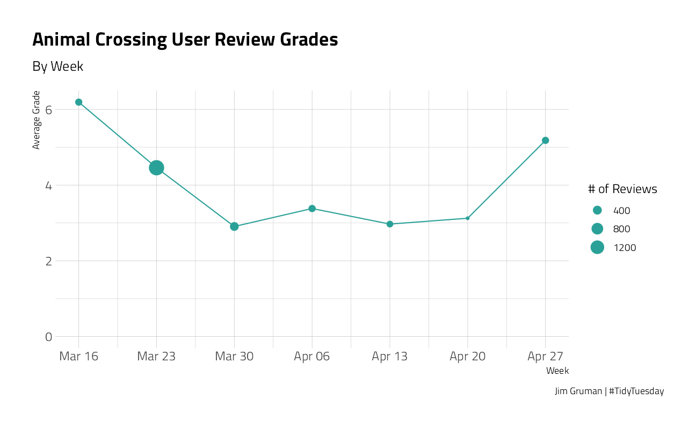
by_week %>%
gather(type, value, contains("pct")) %>%
mutate(type = ifelse(type == "pct_zero", "Rated 0", "Rated 10")) %>%
ggplot(aes(week, value, color = type)) +
geom_line(show.legend = FALSE) +
geom_point(aes(size = nb_reviews)) +
expand_limits(y = 0) +
scale_y_continuous(labels = scales::percent_format(accuracy = 1)) +
scale_x_date(date_labels = "%b %d", date_breaks = "1 week") +
labs(
x = "Week", y = "Portion of Reviews",
size = "# of Reviews",
title = "Most Polarizing Animal Crossing Reviews",
subtitle = paste0("By Week"),
caption = "Jim Gruman | #TidyTuesday"
)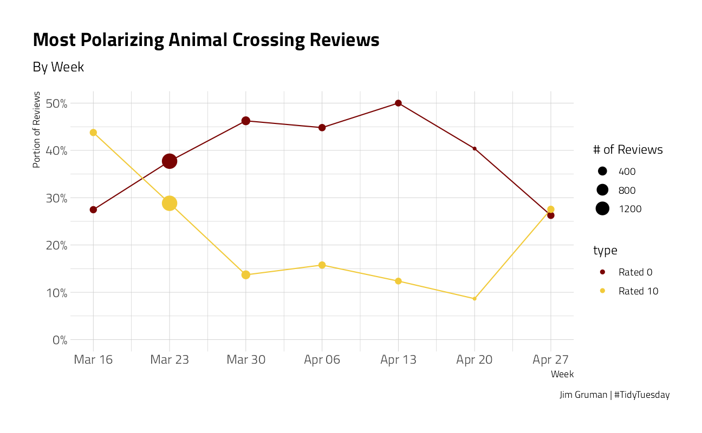
Let’s take a look at how the reviews evolve by day of the week:
by_dow <- reviews_parsed %>%
group_by(dow = wday(date, label = TRUE, week_start = 1)) %>%
summarize(
nb_reviews = n(),
avg_grade = mean(grade),
pct_zero = mean(grade == 0),
pct_ten = mean(grade == 10)
)
by_dow %>%
ggplot(aes(dow, avg_grade)) +
geom_point(aes(size = nb_reviews), color = "#2AA198") +
expand_limits(y = 0) +
# scale_x_date(date_labels = "%b %d", date_breaks = "1 week")+
labs(
x = "Day", y = "Average Grade",
size = "# of Reviews",
title = "Animal Crossing User Review Grades",
subtitle = paste0("By Day of Week"),
caption = "Jim Gruman | #TidyTuesday"
)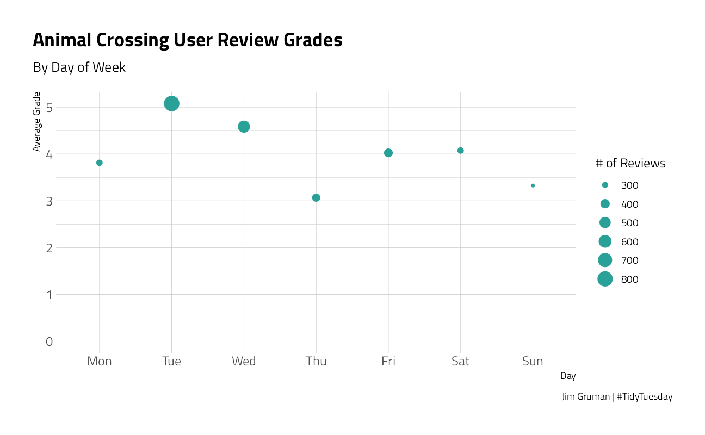
by_dow %>%
gather(type, value, contains("pct")) %>%
mutate(type = ifelse(type == "pct_zero", "Rated 0", "Rated 10")) %>%
ggplot(aes(dow, value, color = type)) +
geom_point(aes(size = nb_reviews),
shape = 21
) +
expand_limits(y = 0) +
scale_y_continuous(labels = scales::percent_format(accuracy = 1)) +
labs(
x = "Day", y = "Portion of Reviews",
size = "# of Reviews",
title = "Most Polarizing Animal Crossing Reviews",
color = "Review Grade",
subtitle = paste0("By The Day of the Week"),
caption = "Jim Gruman | #TidyTuesday"
)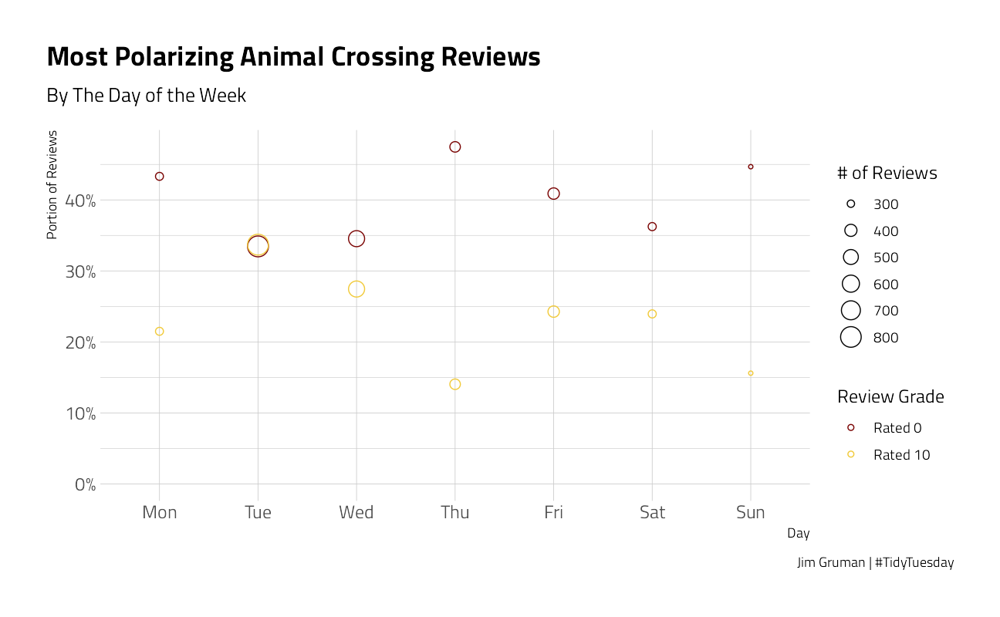
For further topic modeling, we will remove the stop words and excessive copy-pasting within each review document.
user_review_words <- reviews_parsed %>%
unnest_tokens(word, text) %>%
anti_join(stop_words, by = "word") %>%
group_by(user_name, word) %>%
mutate(id = row_number()) %>%
filter(id < 4) %>%
ungroup() %>%
count(user_name, date, grade, word)What are the words that are positively or negatively associated with each user grade?
by_word <- user_review_words %>%
group_by(word) %>%
summarize(
avg_grade = mean(grade),
nb_reviews = n()
) %>%
filter(nb_reviews >= 25) %>%
arrange(desc(avg_grade))
by_word %>%
filter(nb_reviews >= 75) %>%
ggplot(aes(nb_reviews, avg_grade)) +
geom_point() +
geom_text(aes(label = word),
vjust = 1, hjust = 1,
check_overlap = TRUE
) +
scale_x_log10()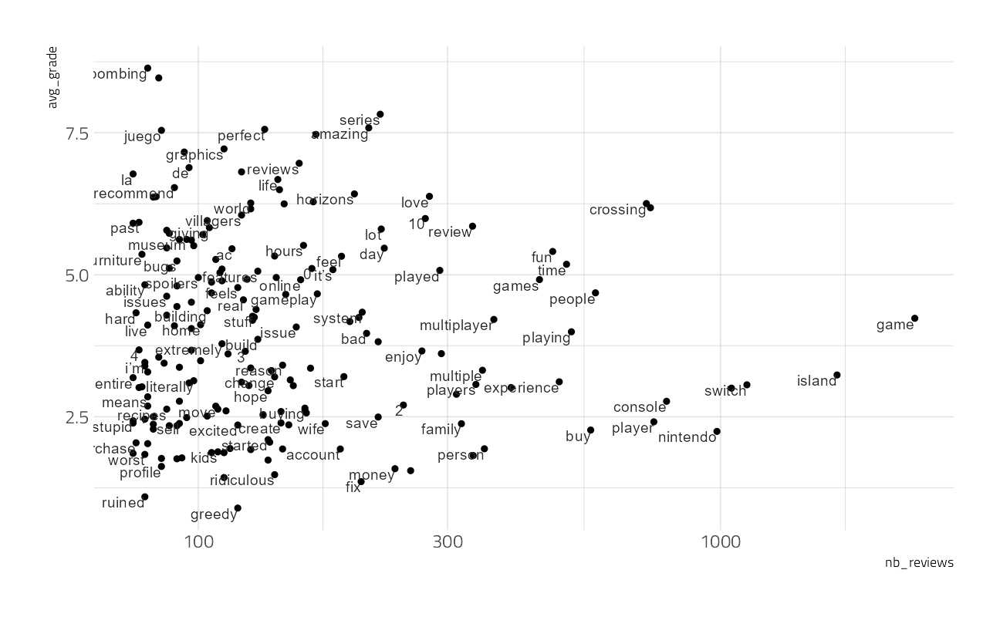
To make a nice chart, let’s zoom in on the 20 words associated with the lowest Review Grades:
by_word %>%
top_n(20, -avg_grade) %>%
ggplot(aes(nb_reviews, avg_grade)) +
geom_point() +
geom_text(aes(label = word),
vjust = 1, hjust = 1, check_overlap = TRUE
) +
scale_x_log10() +
labs(
x = "Number of Reviews", y = "Mean Review Grade",
title = "Words Associated with Lowest Animal Crossing Reviews",
subtitle = "20 most common words in unfavorable reviews; Appearing at least 25 times",
caption = "Jim Gruman | #TidyTuesday"
)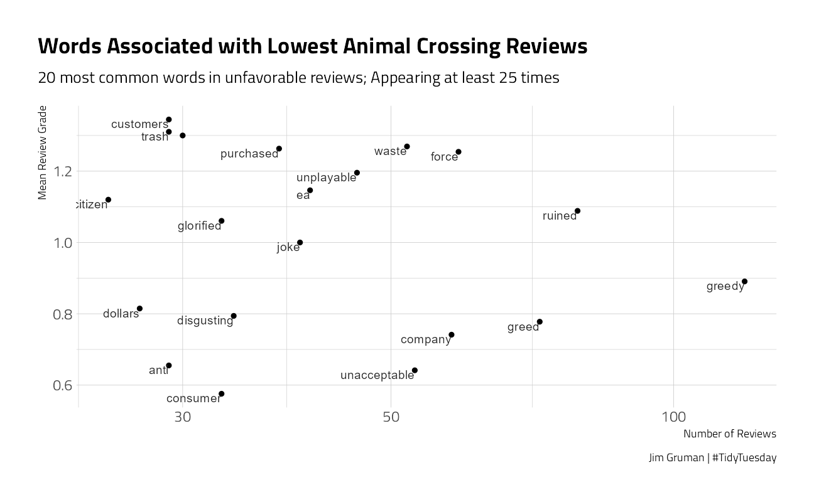
Structural Topic Model
The stm Structural Topic Model package offers unsupervised approaches to building clusters of topics, their relationships with documents, and their relationships with words.
We will arbitrarily choose to cluster here into 6 topics.
review_matrix <- user_review_words %>%
group_by(word) %>%
filter(n() >= 25) %>%
cast_sparse(user_name, word, n)
topic_model <- stm(review_matrix,
K = 6,
verbose = FALSE,
init.type = "Spectral"
)We can plot the words most highly associated with each of 6 topics:
tidy(topic_model) %>%
group_by(topic) %>%
top_n(10, beta) %>%
ggplot(aes(beta, reorder_within(term, by = beta, within = topic), fill = factor(topic))) +
geom_col(show.legend = FALSE) +
tidytext::scale_y_reordered() +
facet_wrap(~topic, scales = "free_y") +
labs(
x = "beta",
y = "Word Tokens",
title = "Animal Crossing Review Topics",
caption = "@jim_gruman | #TidyTuesday"
) +
theme(
axis.text.x.bottom = element_text(size = 8),
plot.margin = unit(c(c(1, 1, 1, 0.5)), units = "cm")
)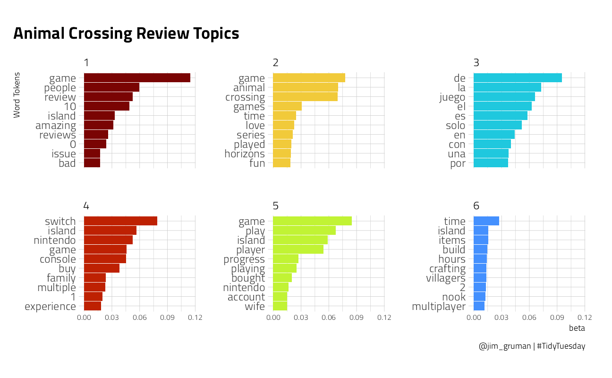
Is there a correlation between the document gamma and the grade that the reviewer gave? We will use the Spearman Correlation, which is sensitive to the ranks of the items. And once again, we will examine how each topic is represented over time.
topic_model_gamma <- tidy(topic_model, matrix = "gamma") %>%
mutate(user_name = rownames(review_matrix)[document]) %>%
inner_join(user_reviews, by = "user_name")
topic_model_gamma %>%
group_by(topic) %>%
summarize(
spearman_correlation = cor(gamma, grade, method = "spearman"),
.groups = "drop"
) %>%
knitr::kable()| topic | spearman_correlation |
|---|---|
| 1 | 0.4214898 |
| 2 | 0.5652946 |
| 3 | 0.2873774 |
| 4 | -0.5849657 |
| 5 | -0.6001275 |
| 6 | 0.1519181 |
topic_model_gamma %>%
group_by(
week = floor_date(date, "week", week_start = 1),
topic
) %>%
summarize(
avg_gamma = mean(gamma),
.groups = "drop"
) %>%
ggplot(aes(week, avg_gamma, color = factor(topic))) +
geom_line(size = 2, show.legend = FALSE) +
geom_text(
data = . %>% filter(week == as.Date("2020-04-27")),
aes(label = paste0("Topic ", topic)),
nudge_x = 2,
check_overlap = TRUE,
show.legend = FALSE
) +
expand_limits(y = 0) +
scale_y_continuous(labels = scales::percent_format(accuracy = 1)) +
scale_x_date(
date_labels = "%b %d",
date_breaks = "1 week",
limits = c(NA_Date_, as.Date("2020-04-30"))
) +
labs(
x = "Date", color = "Topic",
y = "Average gamma (document-topic association)",
title = "Animal Crossing Review Topic Evolution",
caption = "@jim_gruman | #TidyTuesday"
)
Build a Model
We start by loading the tidymodels metapackage, and splitting our data into training and testing sets.
review_split <- initial_split(reviews_parsed, strata = rating)
review_train <- training(review_split)
review_test <- testing(review_split)Next, let’s preprocess the data to get it ready for modeling. We can use specialized steps from textrecipes, along with the general recipe steps.
review_rec <- recipe(rating ~ text + date, data = review_train) %>%
step_mutate(date = as.numeric(difftime(date, min(date), units = "days"))) %>%
step_mutate(dow = wday(date, label = TRUE, week_start = 1)) %>%
step_dummy(dow) %>%
step_tokenize(text) %>%
step_stopwords(text) %>%
step_tokenfilter(text, max_tokens = 500) %>%
step_tfidf(text) %>%
step_normalize(all_predictors())
review_prep <- prep(review_rec)
review_prepData Recipe
Inputs:
role #variables
outcome 1
predictor 2
Training data contained 2249 data points and no missing data.
Operations:
Variable mutation for date [trained]
Variable mutation for dow [trained]
Dummy variables from dow [trained]
Tokenization for text [trained]
Stop word removal for text [trained]
Text filtering for text [trained]
Term frequency-inverse document frequency with text [trained]
Centering and scaling for date, dow_1, dow_2, dow_3, dow_4, dow_5, ... [trained]Let’s walk through the steps in this recipe, which are sensible defaults for a first attempt at training a text classification model such as a sentiment analysis model.
First, we must tell the
recipe()what our model is going to be (using a formula here) and what data we are using.Next, we tokenize our text, with the default tokenization into single words.
Next, we remove stop words (again, just the default set).
It wouldn’t be practical to keep all the tokens from this whole dataset in our model, so we can filter down to only keep, in this case, the top 500 most-used tokens (after removing stop words). This is a pretty dramatic cut and keeping more tokens would be a good next step in improving this model.
We need to decide on some kind of weighting for these tokens next, either something like term frequency or, what we used here, tf-idf. `
Finally, we center and scale (i.e. normalize) all the newly created tf-idf values because the model we are going to use is sensitive to this.
Before using prep() these steps have been defined but not actually run or implemented. The prep() function is where everything gets evaluated.
Now it’s time to specify our model. Here we can set up the model specification for lasso regression with penalty = tune() since we don’t yet know the best value for the regularization parameter and mixture = 1 for lasso. The lasso is often a good baseline for text modeling.
I am using a workflow() in this example for convenience; these are objects that can help you manage modeling pipelines more easily, with pieces that fit together like Lego blocks. This workflow() contains both the recipe and the model.
lasso_spec <- logistic_reg(
penalty = tune(),
mixture = 1
) %>%
set_engine("glmnet")
lasso_wf <- workflow() %>%
add_recipe(review_rec) %>%
add_model(lasso_spec)
lasso_wf== Workflow ====================================================================
Preprocessor: Recipe
Model: logistic_reg()
-- Preprocessor ----------------------------------------------------------------
8 Recipe Steps
* step_mutate()
* step_mutate()
* step_dummy()
* step_tokenize()
* step_stopwords()
* step_tokenfilter()
* step_tfidf()
* step_normalize()
-- Model -----------------------------------------------------------------------
Logistic Regression Model Specification (classification)
Main Arguments:
penalty = tune()
mixture = 1
Computational engine: glmnet Tune model parameters
Let’s get ready to tune the lasso model! First, we need a set of possible regularization parameters to try.
lambda_grid <- grid_regular(penalty(), levels = 40)Next, we need a set of resampled data to fit and evaluate all these models.
review_folds <- bootstraps(review_train, strata = rating)Now we can put it all together and implement the tuning. We can set specific metrics to compute during tuning with metric_set(). Let’s look at AUC, positive predictive value, and negative predictive value so we can understand if one class is harder to predict than another.
all_cores <- parallelly::availableCores(omit = 1)
all_coressystem
11 future::plan("multisession", workers = all_cores) # on Windows
lasso_grid <- tune::tune_grid(
lasso_wf,
resamples = review_folds,
grid = lambda_grid,
metrics = yardstick::metric_set(yardstick::roc_auc, yardstick::ppv, yardstick::npv)
)Once we have our tuning results, we can examine them in detail. Visualization is often more helpful to understand model performance.
lasso_grid %>%
collect_metrics() %>%
ggplot(aes(penalty, mean, color = .metric)) +
geom_line(size = 1.5, show.legend = FALSE) +
facet_wrap(~.metric) +
scale_x_log10() +
labs(title = "Model Performance at various Penalty Values")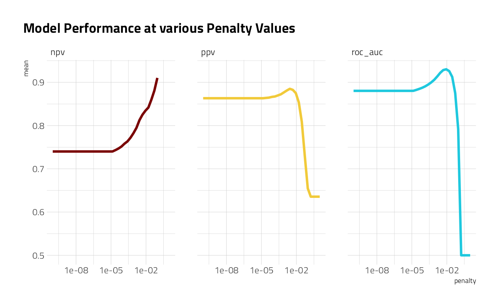
This shows us a lot. We see clearly that AUC and PPV have benefited from the regularization and we could identify the best value of penalty for each of those metrics. The same is not true for NPV. One class (the happy comments) is harder to predict than the other. It might be worth including more tokens in our model, based on this plot.
Choose the final model
Let’s keep our model as is for now, and choose a final model based on AUC. We can use select_best() to find the best AUC and then update our workflow lasso_wf with this value.
best_auc <- lasso_grid %>%
collect_metrics() %>%
filter(.metric == "roc_auc") %>%
top_n(1, wt = mean) %>%
select(penalty)
best_auc# A tibble: 1 x 1
penalty
<dbl>
1 0.00889final_lasso <- finalize_workflow(lasso_wf, best_auc)This is our tuned, finalized workflow (but it is not fit yet). One of the things we can do when we start to fit this finalized workflow on the whole training set is to see what the most important variables are using the vip package.
final_lasso %>%
fit(review_train) %>%
extract_fit_parsnip() %>%
vip::vi(lambda = best_auc$penalty) %>%
group_by(Sign) %>%
top_n(20, wt = abs(Importance)) %>%
ungroup() %>%
mutate(
Importance = abs(Importance),
Variable = str_remove(Variable, "tfidf_text_"),
Variable = fct_reorder(Variable, Importance)
) %>%
ggplot(aes(x = Importance, y = Variable, fill = Sign)) +
geom_col(show.legend = FALSE) +
facet_wrap(~Sign, scales = "free_y") +
labs(y = NULL) +
labs(
title = "Animal Crossing Review Word Importance",
caption = "@jim_gruman | #TidyTuesday"
)
People who are happy with Animal Crossing like to talk about how relaxing, fantastic, enjoyable, and great it is, and also talk in their reviews about the “review bombing” of the negative reviews. Notice that many of the words from the negative reviews are specifically used to talk about the multiplayer experience. These users want a fix and they declare Nintendo greedy for the one-island-per-console play.
final_lasso %>%
fit(review_train) %>%
pull_workflow_fit() %>%
vi(lambda = best_auc$penalty) %>%
group_by(Sign) %>%
ungroup() %>%
mutate(id = row_number()) %>%
filter(str_detect(Variable, "dow")) %>%
mutate(
Importance = abs(Importance),
Variable = str_remove(Variable, "dow_"),
Variable = fct_reorder(Variable, Importance),
) %>%
ggplot(aes(x = Importance, y = Variable, fill = Sign)) +
geom_col(show.legend = FALSE) +
geom_label(aes(label = id), x = 0.1, show.legend = FALSE) +
facet_wrap(~Sign, scales = "free_y") +
labs(y = NULL) +
labs(
title = "Animal Crossing Review Day of Week Importance",
caption = "@jim_gruman | #TidyTuesday"
)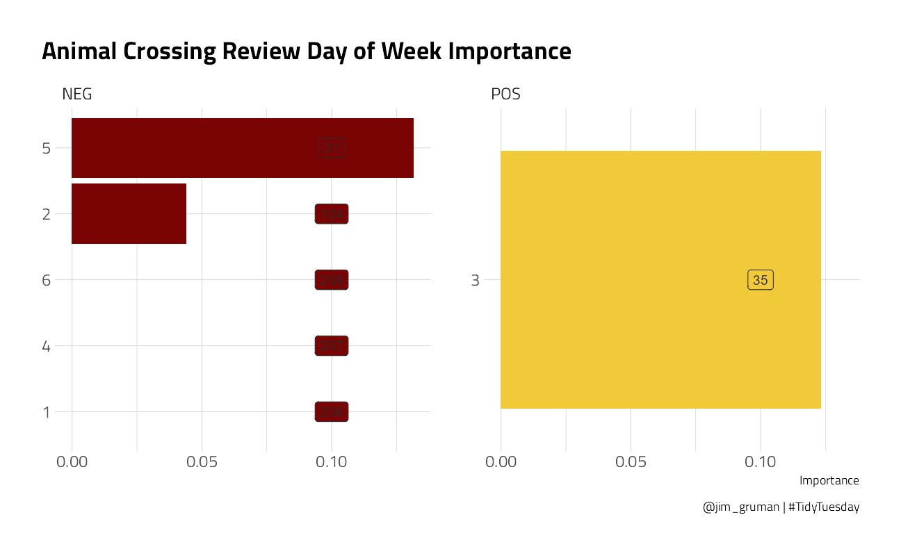
The Day of Week feature does not appear in the Top 20. In this model, a Review written on a Wednesday (day 3) is 88th in importance, after 87 tokenized words. It has a positive influence. Thursday, day 4, is negative.
Finally, let’s return to our test data. The tune package has a function last_fit() which is nice for situations when you have tuned and finalized a model or workflow and want to fit it one last time on your training data and evaluate it on your testing data. You only have to pass this function your finalized model/workflow and your split.
review_final <- last_fit(final_lasso, review_split)
review_final %>%
collect_metrics() %>%
knitr::kable()| .metric | .estimator | .estimate | .config |
|---|---|---|---|
| accuracy | binary | 0.8840000 | Preprocessor1_Model1 |
| roc_auc | binary | 0.9360624 | Preprocessor1_Model1 |
We did not overfit during our tuning process, and the overall accuracy is not bad. Let’s create a confusion matrix for the testing data.
review_final %>%
collect_predictions() %>%
conf_mat(rating, .pred_class) Truth
Prediction bad good
bad 442 53
good 34 221Though our overall accuracy isn’t great, we discover here that it is easier to detect the negative reviews than the positive ones.
sessionInfo()R version 4.1.1 (2021-08-10)
Platform: x86_64-w64-mingw32/x64 (64-bit)
Running under: Windows 10 x64 (build 19043)
Matrix products: default
locale:
[1] LC_COLLATE=English_United States.1252
[2] LC_CTYPE=English_United States.1252
[3] LC_MONETARY=English_United States.1252
[4] LC_NUMERIC=C
[5] LC_TIME=English_United States.1252
attached base packages:
[1] stats graphics grDevices utils datasets methods base
other attached packages:
[1] glmnet_4.1-2 Matrix_1.3-4 vctrs_0.3.8 rlang_0.4.11
[5] stopwords_2.2 vip_0.3.2 textrecipes_0.4.1 yardstick_0.0.8
[9] workflowsets_0.1.0 workflows_0.2.3 tune_0.1.6 rsample_0.1.0
[13] recipes_0.1.16 parsnip_0.1.7.900 modeldata_0.1.1 infer_1.0.0
[17] dials_0.0.10 scales_1.1.1 broom_0.7.9 tidymodels_0.1.3
[21] stm_1.3.6 lubridate_1.7.10 tidytext_0.3.1 forcats_0.5.1
[25] stringr_1.4.0 dplyr_1.0.7 purrr_0.3.4 readr_2.0.1
[29] tidyr_1.1.3 tibble_3.1.4 ggplot2_3.3.5 tidyverse_1.3.1
[33] workflowr_1.6.2
loaded via a namespace (and not attached):
[1] readxl_1.3.1 backports_1.2.1 systemfonts_1.0.2
[4] plyr_1.8.6 splines_4.1.1 listenv_0.8.0
[7] SnowballC_0.7.0 digest_0.6.27 foreach_1.5.1
[10] htmltools_0.5.2 viridis_0.6.1 fansi_0.5.0
[13] magrittr_2.0.1 tzdb_0.1.2 globals_0.14.0
[16] modelr_0.1.8 gower_0.2.2 extrafont_0.17
[19] vroom_1.5.5 R.utils_2.10.1 extrafontdb_1.0
[22] hardhat_0.1.6 colorspace_2.0-2 rvest_1.0.1
[25] textshaping_0.3.5 haven_2.4.3 xfun_0.26
[28] crayon_1.4.1 jsonlite_1.7.2 survival_3.2-11
[31] iterators_1.0.13 glue_1.4.2 gtable_0.3.0
[34] ipred_0.9-12 R.cache_0.15.0 Rttf2pt1_1.3.9
[37] shape_1.4.6 future.apply_1.8.1 DBI_1.1.1
[40] Rcpp_1.0.7 viridisLite_0.4.0 bit_4.0.4
[43] GPfit_1.0-8 lava_1.6.10 prodlim_2019.11.13
[46] httr_1.4.2 ellipsis_0.3.2 farver_2.1.0
[49] R.methodsS3_1.8.1 pkgconfig_2.0.3 nnet_7.3-16
[52] sass_0.4.0 dbplyr_2.1.1 utf8_1.2.2
[55] here_1.0.1 reshape2_1.4.4 labeling_0.4.2
[58] tidyselect_1.1.1 DiceDesign_1.9 later_1.3.0
[61] munsell_0.5.0 cellranger_1.1.0 tools_4.1.1
[64] cachem_1.0.6 cli_3.0.1 generics_0.1.0
[67] evaluate_0.14 fastmap_1.1.0 yaml_2.2.1
[70] ragg_1.1.3 rematch2_2.1.2 bit64_4.0.5
[73] knitr_1.34 fs_1.5.0 future_1.22.1
[76] whisker_0.4 R.oo_1.24.0 xml2_1.3.2
[79] tokenizers_0.2.1 compiler_4.1.1 rstudioapi_0.13
[82] curl_4.3.2 reprex_2.0.1 lhs_1.1.3
[85] bslib_0.3.0 stringi_1.7.4 highr_0.9
[88] gdtools_0.2.3 hrbrthemes_0.8.0 lattice_0.20-44
[91] styler_1.6.1 conflicted_1.0.4 pillar_1.6.2
[94] lifecycle_1.0.1 furrr_0.2.3 jquerylib_0.1.4
[97] data.table_1.14.0 httpuv_1.6.3 R6_2.5.1
[100] promises_1.2.0.1 gridExtra_2.3 janeaustenr_0.1.5
[103] parallelly_1.28.1 codetools_0.2-18 MASS_7.3-54
[106] assertthat_0.2.1 rprojroot_2.0.2 withr_2.4.2
[109] parallel_4.1.1 hms_1.1.0 grid_4.1.1
[112] rpart_4.1-15 timeDate_3043.102 class_7.3-19
[115] rmarkdown_2.11 git2r_0.28.0 pROC_1.18.0